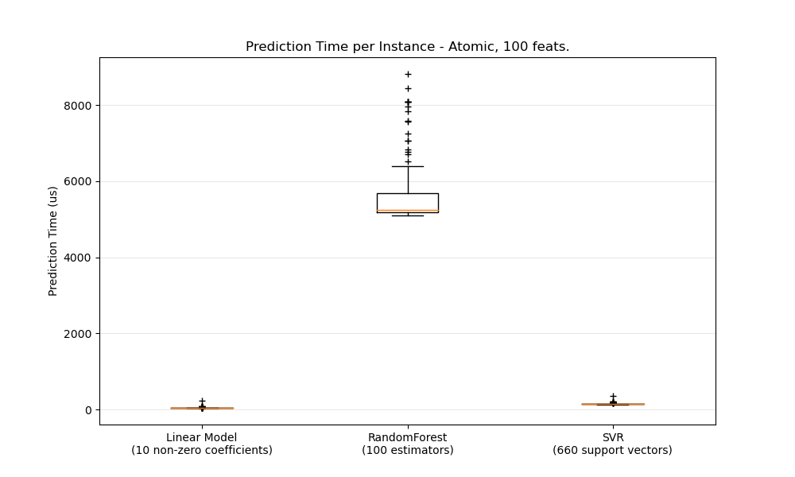
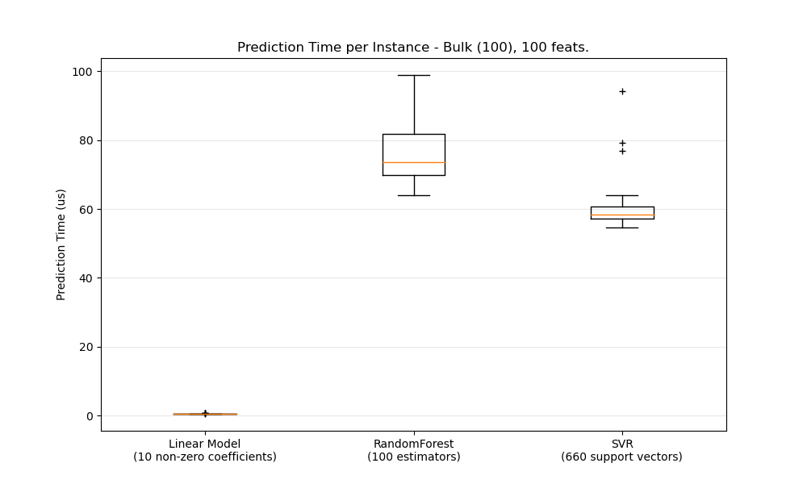

Note
Click here to download the full example code or to run this example in your browser via Binder
Prediction Latency¶
This is an example showing the prediction latency of various scikit-learn estimators.
The goal is to measure the latency one can expect when doing predictions either in bulk or atomic (i.e. one by one) mode.
The plots represent the distribution of the prediction latency as a boxplot.
# Authors: Eustache Diemert <eustache@diemert.fr>
# License: BSD 3 clause
from collections import defaultdict
import time
import gc
import numpy as np
import matplotlib.pyplot as plt
from sklearn.preprocessing import StandardScaler
from sklearn.model_selection import train_test_split
from sklearn.datasets import make_regression
from sklearn.ensemble import RandomForestRegressor
from sklearn.linear_model import Ridge
from sklearn.linear_model import SGDRegressor
from sklearn.svm import SVR
from sklearn.utils import shuffle
def _not_in_sphinx():
# Hack to detect whether we are running by the sphinx builder
return "__file__" in globals()
Benchmark and plot helper functions¶
def atomic_benchmark_estimator(estimator, X_test, verbose=False):
"""Measure runtime prediction of each instance."""
n_instances = X_test.shape[0]
runtimes = np.zeros(n_instances, dtype=float)
for i in range(n_instances):
instance = X_test[[i], :]
start = time.time()
estimator.predict(instance)
runtimes[i] = time.time() - start
if verbose:
print(
"atomic_benchmark runtimes:",
min(runtimes),
np.percentile(runtimes, 50),
max(runtimes),
)
return runtimes
def bulk_benchmark_estimator(estimator, X_test, n_bulk_repeats, verbose):
"""Measure runtime prediction of the whole input."""
n_instances = X_test.shape[0]
runtimes = np.zeros(n_bulk_repeats, dtype=float)
for i in range(n_bulk_repeats):
start = time.time()
estimator.predict(X_test)
runtimes[i] = time.time() - start
runtimes = np.array(list(map(lambda x: x / float(n_instances), runtimes)))
if verbose:
print(
"bulk_benchmark runtimes:",
min(runtimes),
np.percentile(runtimes, 50),
max(runtimes),
)
return runtimes
def benchmark_estimator(estimator, X_test, n_bulk_repeats=30, verbose=False):
"""
Measure runtimes of prediction in both atomic and bulk mode.
Parameters
----------
estimator : already trained estimator supporting `predict()`
X_test : test input
n_bulk_repeats : how many times to repeat when evaluating bulk mode
Returns
-------
atomic_runtimes, bulk_runtimes : a pair of `np.array` which contain the
runtimes in seconds.
"""
atomic_runtimes = atomic_benchmark_estimator(estimator, X_test, verbose)
bulk_runtimes = bulk_benchmark_estimator(estimator, X_test, n_bulk_repeats, verbose)
return atomic_runtimes, bulk_runtimes
def generate_dataset(n_train, n_test, n_features, noise=0.1, verbose=False):
"""Generate a regression dataset with the given parameters."""
if verbose:
print("generating dataset...")
X, y, coef = make_regression(
n_samples=n_train + n_test, n_features=n_features, noise=noise, coef=True
)
random_seed = 13
X_train, X_test, y_train, y_test = train_test_split(
X, y, train_size=n_train, test_size=n_test, random_state=random_seed
)
X_train, y_train = shuffle(X_train, y_train, random_state=random_seed)
X_scaler = StandardScaler()
X_train = X_scaler.fit_transform(X_train)
X_test = X_scaler.transform(X_test)
y_scaler = StandardScaler()
y_train = y_scaler.fit_transform(y_train[:, None])[:, 0]
y_test = y_scaler.transform(y_test[:, None])[:, 0]
gc.collect()
if verbose:
print("ok")
return X_train, y_train, X_test, y_test
def boxplot_runtimes(runtimes, pred_type, configuration):
"""
Plot a new `Figure` with boxplots of prediction runtimes.
Parameters
----------
runtimes : list of `np.array` of latencies in micro-seconds
cls_names : list of estimator class names that generated the runtimes
pred_type : 'bulk' or 'atomic'
"""
fig, ax1 = plt.subplots(figsize=(10, 6))
bp = plt.boxplot(
runtimes,
)
cls_infos = [
"%s\n(%d %s)"
% (
estimator_conf["name"],
estimator_conf["complexity_computer"](estimator_conf["instance"]),
estimator_conf["complexity_label"],
)
for estimator_conf in configuration["estimators"]
]
plt.setp(ax1, xticklabels=cls_infos)
plt.setp(bp["boxes"], color="black")
plt.setp(bp["whiskers"], color="black")
plt.setp(bp["fliers"], color="red", marker="+")
ax1.yaxis.grid(True, linestyle="-", which="major", color="lightgrey", alpha=0.5)
ax1.set_axisbelow(True)
ax1.set_title(
"Prediction Time per Instance - %s, %d feats."
% (pred_type.capitalize(), configuration["n_features"])
)
ax1.set_ylabel("Prediction Time (us)")
plt.show()
def benchmark(configuration):
"""Run the whole benchmark."""
X_train, y_train, X_test, y_test = generate_dataset(
configuration["n_train"], configuration["n_test"], configuration["n_features"]
)
stats = {}
for estimator_conf in configuration["estimators"]:
print("Benchmarking", estimator_conf["instance"])
estimator_conf["instance"].fit(X_train, y_train)
gc.collect()
a, b = benchmark_estimator(estimator_conf["instance"], X_test)
stats[estimator_conf["name"]] = {"atomic": a, "bulk": b}
cls_names = [
estimator_conf["name"] for estimator_conf in configuration["estimators"]
]
runtimes = [1e6 * stats[clf_name]["atomic"] for clf_name in cls_names]
boxplot_runtimes(runtimes, "atomic", configuration)
runtimes = [1e6 * stats[clf_name]["bulk"] for clf_name in cls_names]
boxplot_runtimes(runtimes, "bulk (%d)" % configuration["n_test"], configuration)
def n_feature_influence(estimators, n_train, n_test, n_features, percentile):
"""
Estimate influence of the number of features on prediction time.
Parameters
----------
estimators : dict of (name (str), estimator) to benchmark
n_train : nber of training instances (int)
n_test : nber of testing instances (int)
n_features : list of feature-space dimensionality to test (int)
percentile : percentile at which to measure the speed (int [0-100])
Returns:
--------
percentiles : dict(estimator_name,
dict(n_features, percentile_perf_in_us))
"""
percentiles = defaultdict(defaultdict)
for n in n_features:
print("benchmarking with %d features" % n)
X_train, y_train, X_test, y_test = generate_dataset(n_train, n_test, n)
for cls_name, estimator in estimators.items():
estimator.fit(X_train, y_train)
gc.collect()
runtimes = bulk_benchmark_estimator(estimator, X_test, 30, False)
percentiles[cls_name][n] = 1e6 * np.percentile(runtimes, percentile)
return percentiles
def plot_n_features_influence(percentiles, percentile):
fig, ax1 = plt.subplots(figsize=(10, 6))
colors = ["r", "g", "b"]
for i, cls_name in enumerate(percentiles.keys()):
x = np.array(sorted([n for n in percentiles[cls_name].keys()]))
y = np.array([percentiles[cls_name][n] for n in x])
plt.plot(
x,
y,
color=colors[i],
)
ax1.yaxis.grid(True, linestyle="-", which="major", color="lightgrey", alpha=0.5)
ax1.set_axisbelow(True)
ax1.set_title("Evolution of Prediction Time with #Features")
ax1.set_xlabel("#Features")
ax1.set_ylabel("Prediction Time at %d%%-ile (us)" % percentile)
plt.show()
def benchmark_throughputs(configuration, duration_secs=0.1):
"""benchmark throughput for different estimators."""
X_train, y_train, X_test, y_test = generate_dataset(
configuration["n_train"], configuration["n_test"], configuration["n_features"]
)
throughputs = dict()
for estimator_config in configuration["estimators"]:
estimator_config["instance"].fit(X_train, y_train)
start_time = time.time()
n_predictions = 0
while (time.time() - start_time) < duration_secs:
estimator_config["instance"].predict(X_test[[0]])
n_predictions += 1
throughputs[estimator_config["name"]] = n_predictions / duration_secs
return throughputs
def plot_benchmark_throughput(throughputs, configuration):
fig, ax = plt.subplots(figsize=(10, 6))
colors = ["r", "g", "b"]
cls_infos = [
"%s\n(%d %s)"
% (
estimator_conf["name"],
estimator_conf["complexity_computer"](estimator_conf["instance"]),
estimator_conf["complexity_label"],
)
for estimator_conf in configuration["estimators"]
]
cls_values = [
throughputs[estimator_conf["name"]]
for estimator_conf in configuration["estimators"]
]
plt.bar(range(len(throughputs)), cls_values, width=0.5, color=colors)
ax.set_xticks(np.linspace(0.25, len(throughputs) - 0.75, len(throughputs)))
ax.set_xticklabels(cls_infos, fontsize=10)
ymax = max(cls_values) * 1.2
ax.set_ylim((0, ymax))
ax.set_ylabel("Throughput (predictions/sec)")
ax.set_title(
"Prediction Throughput for different estimators (%d features)"
% configuration["n_features"]
)
plt.show()
Benchmark bulk/atomic prediction speed for various regressors¶
configuration = {
"n_train": int(1e3),
"n_test": int(1e2),
"n_features": int(1e2),
"estimators": [
{
"name": "Linear Model",
"instance": SGDRegressor(
penalty="elasticnet", alpha=0.01, l1_ratio=0.25, tol=1e-4
),
"complexity_label": "non-zero coefficients",
"complexity_computer": lambda clf: np.count_nonzero(clf.coef_),
},
{
"name": "RandomForest",
"instance": RandomForestRegressor(),
"complexity_label": "estimators",
"complexity_computer": lambda clf: clf.n_estimators,
},
{
"name": "SVR",
"instance": SVR(kernel="rbf"),
"complexity_label": "support vectors",
"complexity_computer": lambda clf: len(clf.support_vectors_),
},
],
}
benchmark(configuration)
- 
- 
Benchmarking SGDRegressor(alpha=0.01, l1_ratio=0.25, penalty='elasticnet', tol=0.0001)
Benchmarking RandomForestRegressor()
Benchmarking SVR()
Benchmark n_features influence on prediction speed¶
percentile = 90
percentiles = n_feature_influence(
{"ridge": Ridge()},
configuration["n_train"],
configuration["n_test"],
[100, 250, 500],
percentile,
)
plot_n_features_influence(percentiles, percentile)
benchmarking with 100 features
benchmarking with 250 features
benchmarking with 500 features
Benchmark throughput¶
throughputs = benchmark_throughputs(configuration)
plot_benchmark_throughput(throughputs, configuration)
Total running time of the script: ( 0 minutes 11.945 seconds)